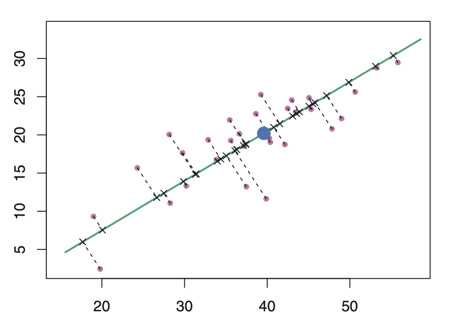

- Published on
- November 7, 2020
-

Principal Components Analysis
This post presents several equivalent vies on principal component analysis (PCA). The three main themes are finding directions in the data space along which the data are maximally variable, finding lower-dimensional yet accurate representations of the data, and formulating a probabilistic model of PCA.